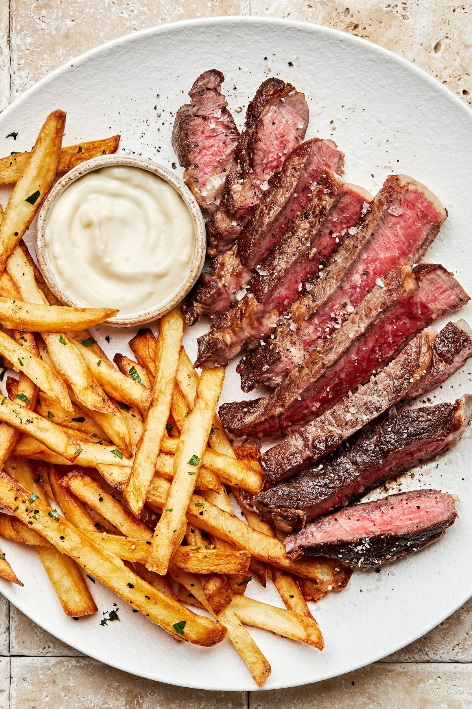

Bub's Best Flank Steak

Ingredients:
½ cup vegetable oil
⅓ cup low-sodium soy sauce
¼ cup red wine vinegar
2 tablespoons fresh lemon juice
1 ½ tablespoons Worcestershire sauce
1 tablespoon Dijon mustard
2 cloves garlic, minced
½ teaspoon ground black pepper
1 (1 1/2-pound) flank steak
Directions:
Gather all your ingredients.
Whisk together oil, soy sauce, vinegar, lemon juice, Worcestershire sauce, Dijon mustard, garlic, and pepper for marinade until thoroughly combined.
Place steak in a 9x13-inch glass baking dish.
Pour marinade over flank steak in the baking dish; turn several times to coat thoroughly with marinade.
Cover, and refrigerate for 2 to 6 hours, or up to 12 hours if you have time.
When ready to cook, preheat an outdoor grill for medium-high heat and lightly oil the grate.
Remove steak from the marinade and shake off excess.
Discard the remaining marinade.
Cook steak on the preheated grill for about 5 minutes per side, or to desired doneness.
Remove from the grill and let rest for 5 minutes before slicing and serving.
Eat!
Home